Manya Singla
Manya Singla
Case Study
Women in Aerospace Canada — UX Improvements
The challenge
Visitors struggled to find key information (membership, events, donations) due to dense navigation and inconsistent hierarchy.
Audience
Prospective and current members, partners, and donors.
Process
- Ran a quick heuristic review (Nielsen’s heuristics + WCAG checks).
- Mapped current IA, identified redundancies, and proposed a streamlined nav.
- Created componentized layouts with consistent spacing and typography scale.
- Documented recommendations and prioritized quick wins vs. deeper refactors.
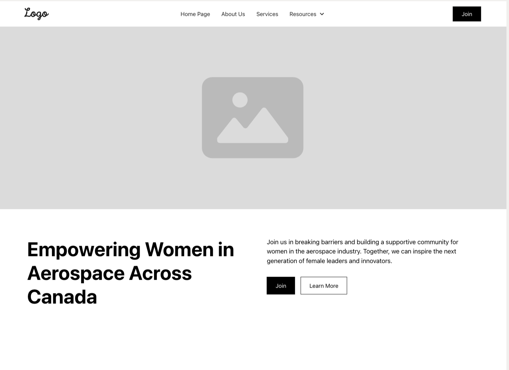
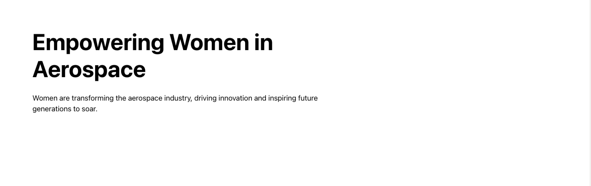
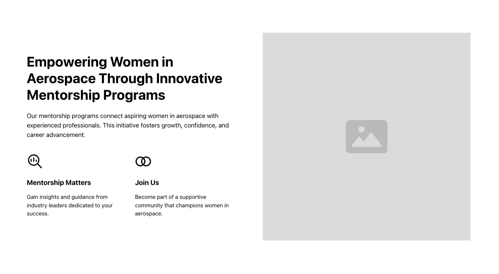
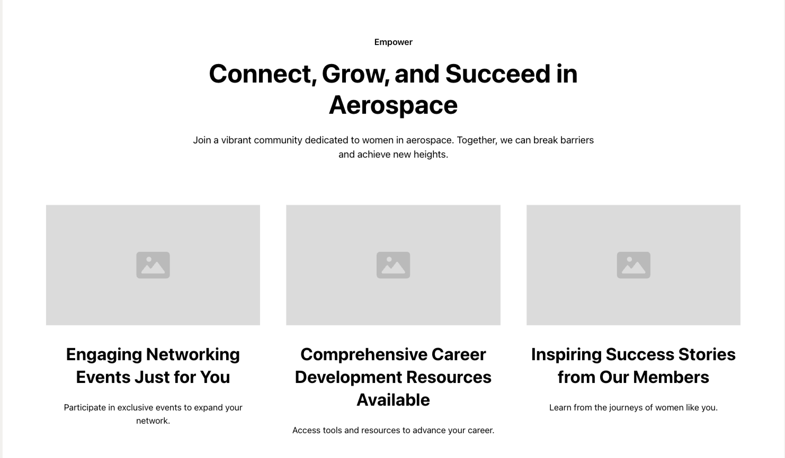
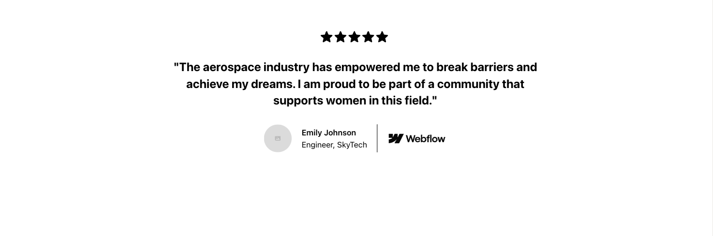
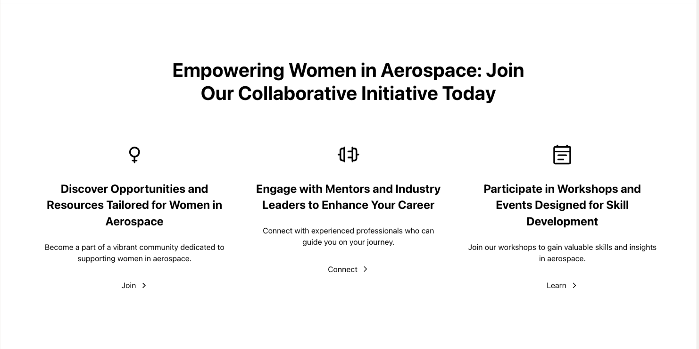
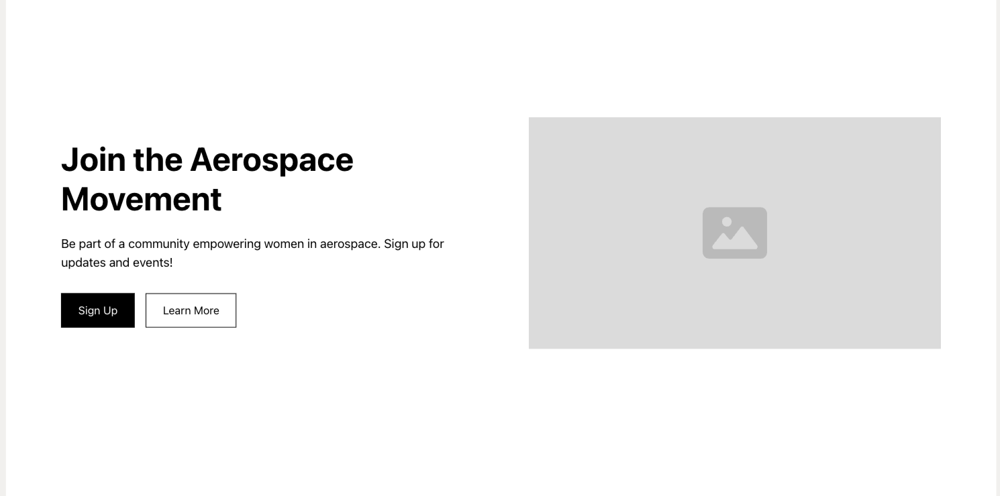
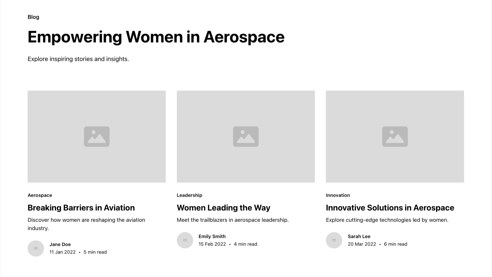
Outcomes
Clearer navigation proposals and accessible component specs that reduce friction for key tasks.
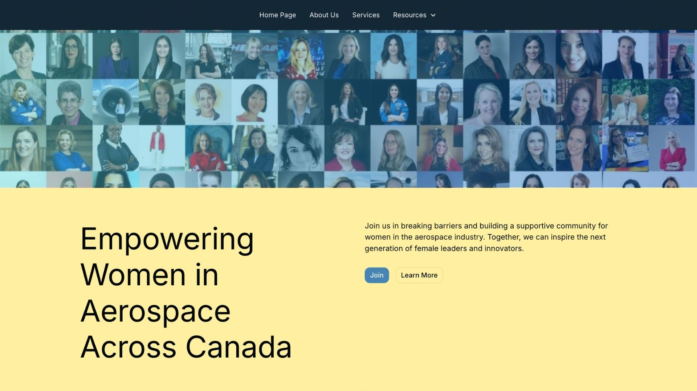
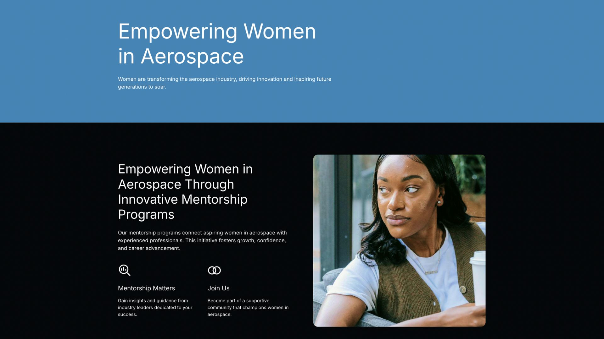
 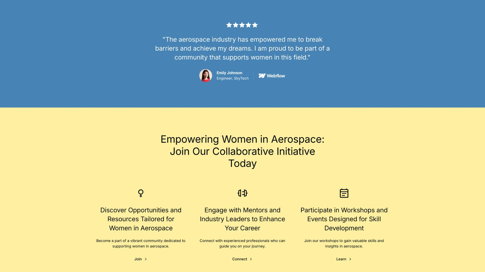
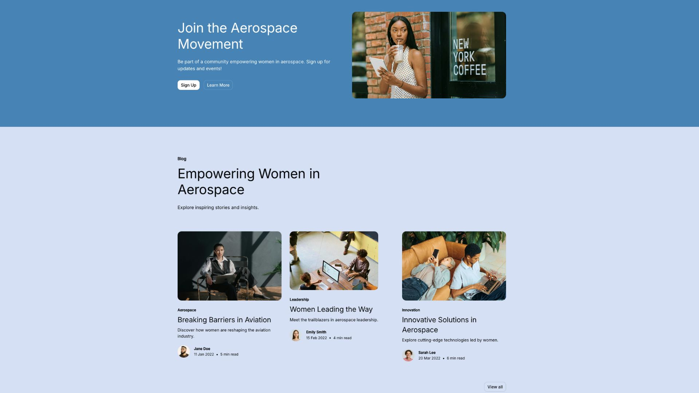
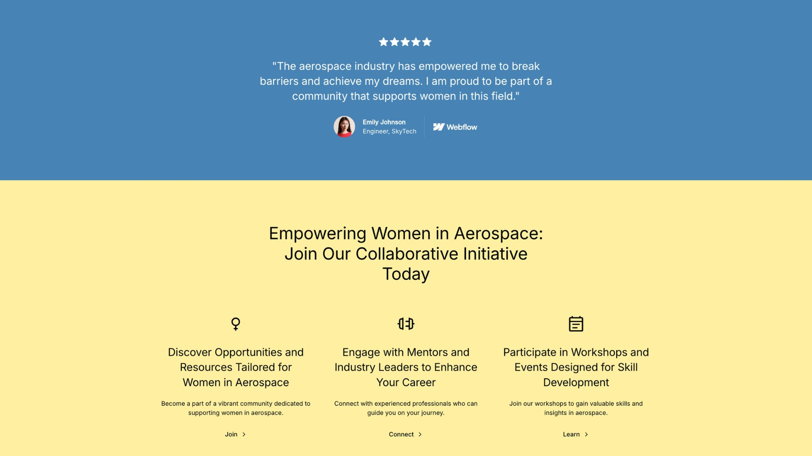
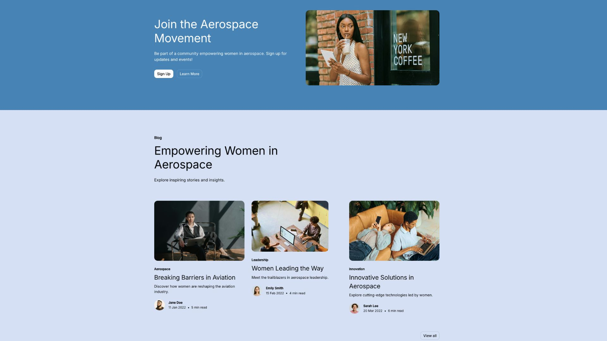
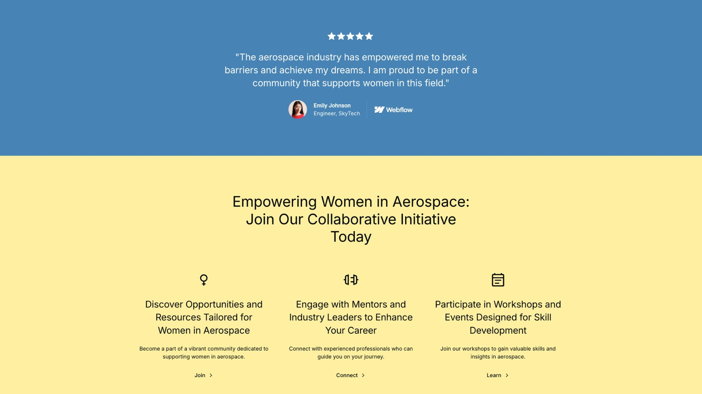
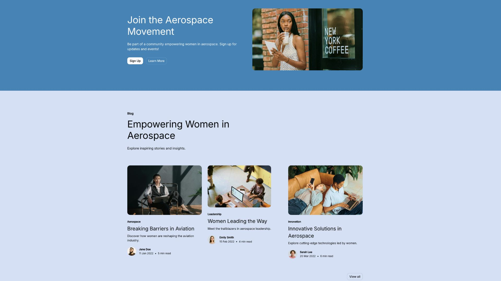
Next steps & Reflection
Integrating elements of the new design and including membership details on page. Addressing concern regarding having to host ticket sales on external source and integrating payment option directly on WIA website. Validating IA via card sort/tree testing and implementing a design system tokens layer for consistency.
To-do list aside, I can't wait to keep working with WIA to bring their website to the next level!